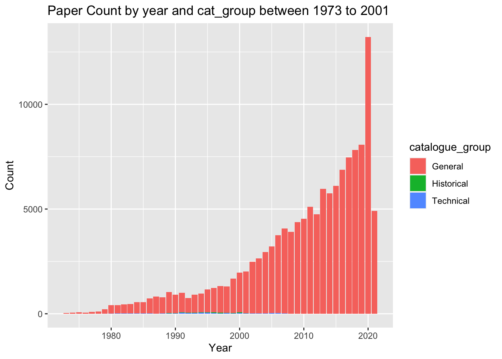
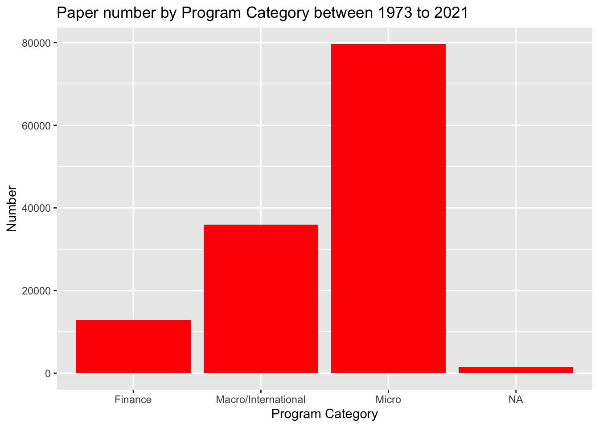
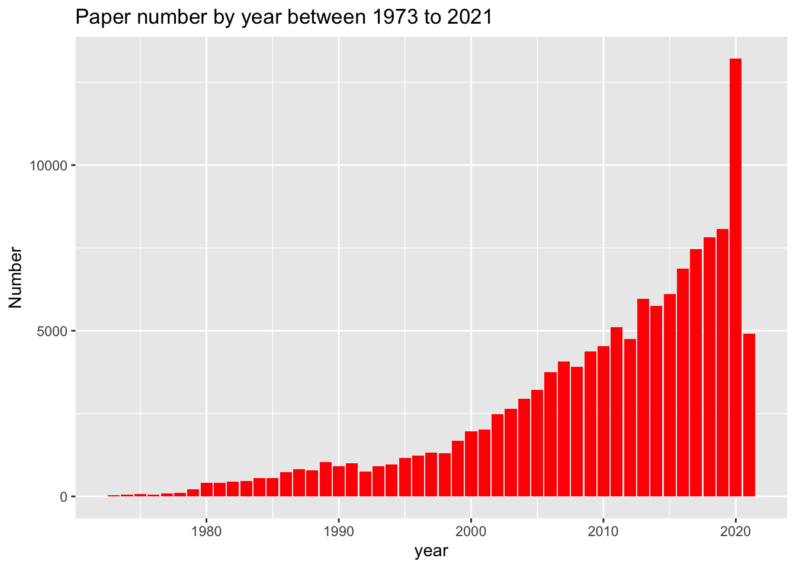
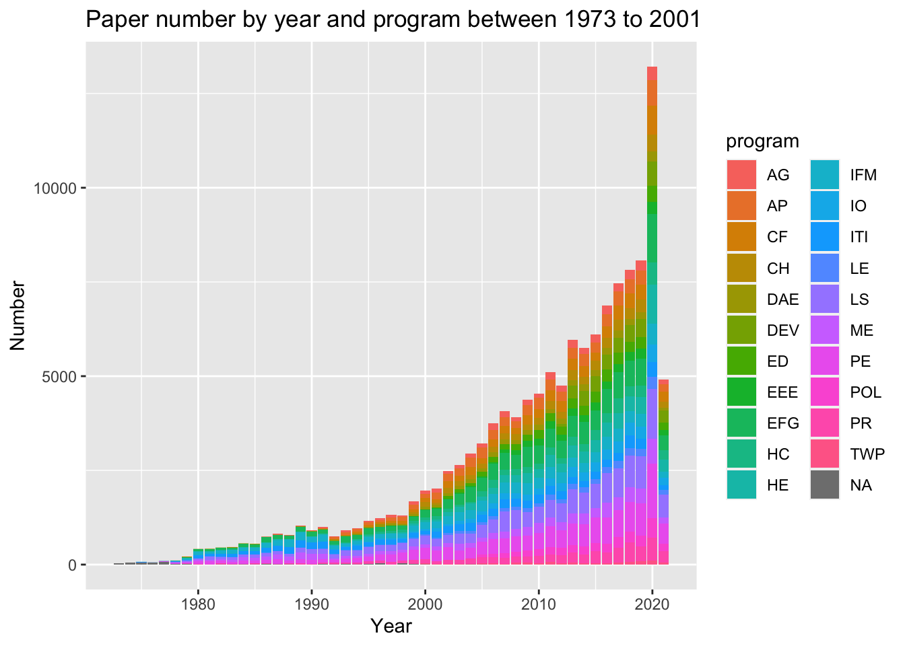
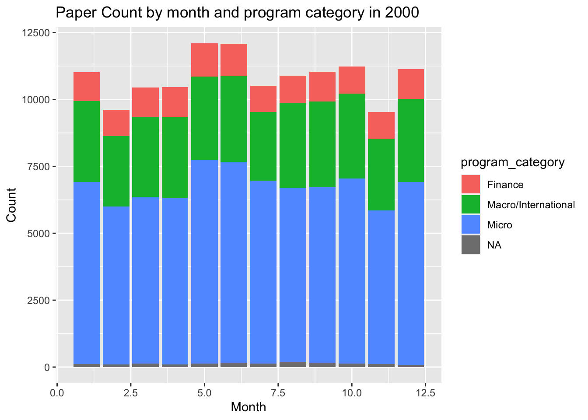

library('readr')
library('readr')
library('ggplot2')
library("dplyr")##
## Attaching package: 'dplyr'## The following objects are masked from 'package:stats':
##
## filter, lag## The following objects are masked from 'package:base':
##
## intersect, setdiff, setequal, unionlibrary("stringr")
library("scales")##
## Attaching package: 'scales'## The following object is masked from 'package:readr':
##
## col_factorpapers <- readr::read_csv('https://raw.githubusercontent.com/rfordatascience/tidytuesday/master/data/2021/2021-09-28/papers.csv')## Rows: 29434 Columns: 4## ── Column specification ────────────────────────────────────────────────────────
## Delimiter: ","
## chr (2): paper, title
## dbl (2): year, month##
## ℹ Use `spec()` to retrieve the full column specification for this data.
## ℹ Specify the column types or set `show_col_types = FALSE` to quiet this message.glimpse(papers)## Rows: 29,434
## Columns: 4
## $ paper <chr> "w0001", "w0002", "w0003", "w0004", "w0005", "w0006", "w0007", "…
## $ year <dbl> 1973, 1973, 1973, 1973, 1973, 1973, 1973, 1973, 1973, 1973, 1973…
## $ month <dbl> 6, 6, 6, 7, 7, 7, 8, 9, 9, 9, 9, 10, 10, 10, 10, 11, 11, 11, 12,…
## $ title <chr> "Education, Information, and Efficiency", "Hospital Utilization:…paper_authors <- readr::read_csv('https://raw.githubusercontent.com/rfordatascience/tidytuesday/master/data/2021/2021-09-28/paper_authors.csv')## Rows: 67090 Columns: 2## ── Column specification ────────────────────────────────────────────────────────
## Delimiter: ","
## chr (2): paper, author##
## ℹ Use `spec()` to retrieve the full column specification for this data.
## ℹ Specify the column types or set `show_col_types = FALSE` to quiet this message.glimpse(paper_authors)## Rows: 67,090
## Columns: 2
## $ paper <chr> "w0001", "w0002", "w0003", "w0004", "w0005", "w0006", "w0007", …
## $ author <chr> "w0001.1", "w0002.1", "w0003.1", "w0004.1", "w0005.1", "w0006.1…authors <- readr::read_csv('https://raw.githubusercontent.com/rfordatascience/tidytuesday/master/data/2021/2021-09-28/authors.csv')## Rows: 15437 Columns: 4## ── Column specification ────────────────────────────────────────────────────────
## Delimiter: ","
## chr (4): author, name, user_nber, user_repec##
## ℹ Use `spec()` to retrieve the full column specification for this data.
## ℹ Specify the column types or set `show_col_types = FALSE` to quiet this message.glimpse(authors)## Rows: 15,437
## Columns: 4
## $ author <chr> "w0001.1", "w0002.1", "w0003.1", "w0004.1", "w0005.1", "w00…
## $ name <chr> "Finis Welch", "Barry R Chiswick", "Swarnjit S Arora", "Lee…
## $ user_nber <chr> "finis_welch", "barry_chiswick", "swarnjit_arora", NA, "jam…
## $ user_repec <chr> NA, "pch425", NA, "pli669", "psm28", NA, NA, NA, "pli259", …paper_programs <- readr::read_csv('https://raw.githubusercontent.com/rfordatascience/tidytuesday/master/data/2021/2021-09-28/paper_programs.csv')## Rows: 53996 Columns: 2## ── Column specification ────────────────────────────────────────────────────────
## Delimiter: ","
## chr (2): paper, program##
## ℹ Use `spec()` to retrieve the full column specification for this data.
## ℹ Specify the column types or set `show_col_types = FALSE` to quiet this message.glimpse(paper_programs)## Rows: 53,996
## Columns: 2
## $ paper <chr> "w0074", "w0087", "w0087", "w0107", "w0116", "w0117", "w0129",…
## $ program <chr> "EFG", "IFM", "ITI", "PE", "PE", "LS", "HE", "IFM", "ITI", "HE…programs <- readr::read_csv('https://raw.githubusercontent.com/rfordatascience/tidytuesday/master/data/2021/2021-09-28/programs.csv')## Rows: 21 Columns: 3## ── Column specification ────────────────────────────────────────────────────────
## Delimiter: ","
## chr (3): program, program_desc, program_category##
## ℹ Use `spec()` to retrieve the full column specification for this data.
## ℹ Specify the column types or set `show_col_types = FALSE` to quiet this message.glimpse(programs)## Rows: 21
## Columns: 3
## $ program <chr> "AG", "AP", "CF", "CH", "DAE", "DEV", "ED", "EEE", "E…
## $ program_desc <chr> "Economics of Aging", "Asset Pricing", "Corporate Fin…
## $ program_category <chr> "Micro", "Finance", "Finance", "Micro", "Micro", "Mic…
#View each of them and then write each of them as a csv file
```r
write_csv(x = papers, "Data/papers.csv")
write_csv(x = authors, "data/authors.csv")
write_csv(x = programs, "data/programs.csv")
write_csv(x = paper_authors, "data/paper_authors.csv")
write_csv(x = paper_programs, "data/paper_programs.csv")#Clean the data and joined them [left joining]
joined <- left_join(papers, paper_authors) %>%
left_join(authors) %>%
left_join(paper_programs) %>%
left_join(programs)%>%
mutate(
catalogue_group = str_sub(paper, 1, 1),
catalogue_group = case_when(
catalogue_group == "h" ~ "Historical",
catalogue_group == "t" ~ "Technical",
catalogue_group == "w" ~ "General"
),
.after = paper
) ## Joining, by = "paper"## Joining, by = "author"## Joining, by = "paper"## Joining, by = "program"View(joined)
sapply(joined, n_distinct)## paper catalogue_group year month
## 29434 3 49 12
## title author name user_nber
## 29419 15437 15398 14247
## user_repec program program_desc program_category
## 5456 22 22 4#Let’s see how many papers publishes each year throughout the 1973-2001 time
ggplot(joined, aes(x=year, fill=catalogue_group)) + geom_bar() + labs(title= "Paper Count by year and cat_group between 1973 to 2001") + xlab("Year") + ylab("Count")
#It’s quite clear that the majority is “general” type. So, let’s do something else. What about finding number of papers according to program category? Lets do it
ggplot(joined, aes(x=program_category)) +
geom_bar(fill = "red") + labs(title= "Paper number by Program Category between 1973 to 2021") + xlab("Program Category") + ylab("Number")
#What about numbe rof papper for each year?
ggplot(joined, aes(x=year)) +
geom_bar(fill = "red") + labs(title= "Paper number by year between 1973 to 2021") + xlab("year") + ylab("Number") #What about number of paper for each year categorized by program name also?
ggplot(joined, aes(x=year, fill=program)) + geom_bar() + labs(title= "Paper number by year and program between 1973 to 2001") + xlab("Year") + ylab("Number")
#Most number of papers were in 2000. Let’s look deeper in that
data_2000 <- joined %>% filter(year ==2000)#View the 2000 data
glimpse(data_2000)## Rows: 1,962
## Columns: 12
## $ paper <chr> "w6130", "w6130", "w6509", "w6509", "w6518", "w6518",…
## $ catalogue_group <chr> "General", "General", "General", "General", "General"…
## $ year <dbl> 2000, 2000, 2000, 2000, 2000, 2000, 2000, 2000, 2000,…
## $ month <dbl> 3, 3, 5, 5, 9, 9, 3, 3, 6, 6, 5, 5, 5, 5, 6, 6, 6, 6,…
## $ title <chr> "Nonparametric Risk Management and Implied Risk Avers…
## $ author <chr> "w5345.1", "t0059.1", "w2161.1", "t0097.1", "w0505.1"…
## $ name <chr> "Yacine Ait-Sahalia", "Andrew W Lo", "Lucian Arye Beb…
## $ user_nber <chr> "yacine_ait-sahalia", "andrew_lo", "lucian_bebchuk", …
## $ user_repec <chr> "pai23", "plo171", "pbe72", NA, "pmi37", "pes29", "pb…
## $ program <chr> "AP", "AP", "LE", "LE", "ME", "ME", "CF", "CF", "IFM"…
## $ program_desc <chr> "Asset Pricing", "Asset Pricing", "Law and Economics"…
## $ program_category <chr> "Finance", "Finance", "Micro", "Micro", "Macro/Intern…#Let's see how many papers from each program got published in each month of 2000?
ggplot(joined, aes(x=month, fill=program_category)) + geom_bar() + labs(title= "Paper Count by month and program category in 2000") + xlab("Month") + ylab("Count")
#We got a problem here. The x axis (month number is not integer. Let's fix it.
ggp <- ggplot(joined, aes(x=month, fill=program_category)) + geom_bar() + labs(title= "Paper Count by month and program category in 2000") + xlab("Month") + ylab("Count")
#fixed
ggp + scale_x_continuous(breaks = pretty_breaks())